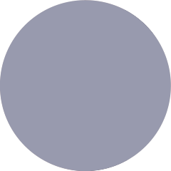

밋밋하고 꺼진 이마, 볼륨이 필요합니다
이마는 얼굴 면적의 1/3가량을 차지하며 개인의 프로화일 이미지를 좌우하는데 큰 영향을 끼치는 부위입니다.
측면에서 봤을 때 미간, 코, 입, 턱 끝의 높이와 어우러지는 볼륨감을 가지고, 굴곡 없이 매끈한 곡선을 가진 이마를 이상적인 모양으로 보죠.
만약 이마가 곡선 없이 평평하거나 오히려 움푹 들어간 경우, 또는 눈썹 뼈가 발달되어 이마가 상대적으로 들어가 보이는 경우에는
남성적이고 강해 보이는 인상을 주며, 그 콤플렉스로 인해 화장이나 헤어 스타일링에도 한계가 생기게 됩니다.
이마 볼륨은 개인의 프로화일을 좌우합니다.
밋밋하고 꺼진 이마, 볼륨이 필요합니다
이마는 얼굴 면적의 1/3가량을 차지하며 개인의 프로화일 이미지를 좌우하는데 큰 영향을 끼치는 부위입니다.
측면에서 봤을 때 미간, 코, 입, 턱 끝의 높이와 어우러지는 볼륨감을 가지고, 굴곡 없이 매끈한 곡선을 가진 이마를 이상적인 모양으로 보죠.
만약 이마가 곡선 없이 평평하거나 오히려 움푹 들어간 경우, 또는 눈썹 뼈가 발달되어 이마가 상대적으로 들어가 보이는 경우에는
남성적이고 강해 보이는 인상을 주며, 그 콤플렉스로 인해 화장이나 헤어 스타일링에도 한계가 생기게 됩니다.이마 볼륨은 개인의 프로화일을 좌우합니다.
피부는 다양한 층들이 각자의 역할을 하며 복합적으로 구성되어 있습니다.
따라서 동안 재수술은 동안 성형에 충분한 경험을 갖춘 전문의가 보다 정확히 진단하여 원인을 개선하는 것이 핵심입니다.
동안 재수술의 이유는 크게 네 가지로 나눌 수 있습니다. 주름이 충분히 개선되지 않은 경우,
피부 표면이 울퉁불퉁해 보이는 경우, 비대칭으로 개선된 경우, 단순 재발의 경우가 있죠.
피부는 다양한 층들이 각자의 역할을 하며 복합적으로 구성되어 있습니다.
따라서 동안 재수술은 동안 성형에 충분한 경험을 갖춘 전문의가 보다 정확히 진단하여 원인을 개선하는 것이 핵심입니다.
동안 재수술의 이유는 크게 네 가지로 나눌 수 있습니다. 주름이 충분히 개선되지 않은 경우,
피부 표면이 울퉁불퉁해 보이는 경우, 비대칭으로 개선된 경우, 단순 재발의 경우가 있죠.
-
BEFORE
-
수술 후 6개월
* 본 이미지는 촬영 조건에 따라 실물과 다르게 보일 수 있으며, 환자 본인의 동의를 얻어 촬영 후 게재하였습니다.
* 본 이미지는 촬영 조건에 따라 실물과 다르게 보일 수 있으며, 환자 본인의 동의를 얻어 촬영 후 게재하였습니다.
기본
안면거상술은 보다 직접적인 방법으로
얼굴 처짐을 개선합니다
안면거상술은 귀 앞쪽의 절개를 통해 얼굴의 처지고 주름진 피부를 전반적으로 박리하고 당겨주는 수술입니다. 당겨진 피부를 단단히 고정하고 남은 피부는 절제하여 봉합하죠. 이 방법은 처진 피부를 보다 직접적으로 당겨줄 수 있고 그 개선 범위 또한 비교적 넓습니다.
따라서 안면거상술은 다른 어떤 동안 성형 방법들 중에서도 그 효과가 뛰어나다고 할 수 있으며, 보다 매끄럽고 젊어 보이는 얼굴 피부로의 개선이 가능합니다.
type-quotation(txt)
따라서 울쎄라는 근막층 및 피부의 각 층의 깊이에 맞춰 1.5mm, 3.0mm, 4.5mm 등 보다
정확한 시술이 가능하고 그만큼 더욱 뛰어난 효과를 보입니다
안면거상술은 보다 직접적인 방법으로
얼굴 처짐을 개선합니다안면거상술은 귀 앞쪽의 절개를 통해 얼굴의 처지고 주름진 피부를 전반적으로 박리하고 당겨주는 수술입니다. 당겨진 피부를 단단히 고정하고 남은 피부는 절제하여 봉합하죠. 이 방법은 처진 피부를 보다 직접적으로 당겨줄 수 있고 그 개선 범위 또한 비교적 넓습니다.
따라서 안면거상술은 다른 어떤 동안 성형 방법들 중에서도 그 효과가 뛰어나다고 할 수 있으며, 보다 매끄럽고 젊어 보이는 얼굴 피부로의 개선이 가능합니다.
기본
가슴 재건이란?
가슴 절제로 인해 잃어버린 가슴의 형태를 복구하는 수술입니다.
-
유방암 치료를 위한 가슴 절제
-
가슴 재건
-
미용적 만족감 상승
-
긍정적인 태도와 여성으로서의 자존감 회복
type-line
코끝이 넓게 퍼져있는 경우
코끝이 넓게 퍼져있는 경우에는 대게 코가 낮고 힘이 없어 코끝에 자가연골을 이식하는 것만으로는 큰 효과를 기대하기가 어렵습니다. 때문에 기본적으로 코끝을 형성하는 좌우 연골을 모아주고 콧날개의 폭을 줄이는 등의 방법으로 코끝의 모양을 잡아주어야 합니다. 또, 높아진 코끝을 콧구멍 사이의 비주가 제대로 지탱해줄 수 있도록 자가연골을 통해 힘을 더해주면, 코끝의 높이와 모양이 더욱 안정적으로 유지될 수 있습니다.
type-merge(list)
보다 전문화된 비만관리 및 치료를 추구하는 바노바기
바노바기 비만 진료 전담팀
type-half(list)
대표적인 양악 수술 대상
-
얼굴이 비뚤어진 안면비대칭인 경우
-
턱이 발달하여 얼굴이 길거나 주걱턱인 경우
-
입이 전체적으로 돌출됐거나 반대로 턱이 들어간 경우
-

웃을 때 잇몸 노출이 심한 경우
type-three(list)
다양한 비주 유형
-
case 1
-
case 2
-
case 3
-
case 4
-
case 5
-
case 6
type-imbalance(list)
-
일반적인 머리형
-
-
모자 및 안경 착용,
헤어 스타일링 한계
두상 성형 대상
가슴 재건이란?
가슴 절제로 인해 잃어버린 가슴의 형태를 복구하는 수술입니다.
유방암 치료를 위한 가슴 절제
가슴 재건
미용적 만족감 상승
긍정적인 태도와 여성으로서의 자존감 회복
기본
윤곽 재수술, 바노바기를 선택해야 하는 이유
-
심리적 불안감1:1 주치의 담당제, 수술실 실명제
1:1 주치의 담당제와 수술실 실명제 도입 등으로 신뢰도를 높이며, 진솔한 상담을 통해 재수술로 인한 개선 가능성과 추구하는 방향을 명확히 공유합니다.
-
기존 얼굴 구조조직의 변형정밀 진단 시스템
3D CT와 X-Ray, 종합검진 등과 같은 정밀 진단 시스템을 통해 현 상태와 문제점, 개선 방향을 보다 정밀히 예측하고 계획할 수 있습니다.
-
고정점을 구축하기 어려움윤곽 성형 전담팀 운영
2000년 개원 이후 풍부한 경험과 기술을 갖춘 윤곽 성형 전담팀이 운영되어, 개개인의 상황에 맞는 수술법을 적용하고 수술의 완성도를 높입니다.
type-half
동안 성형 후 재수술이 필요한 대표적인 경우
-
불충분한 주름 개선
피부를 박리할 때 박리 영역이 충분하지 못한 경우 발생합니다. 보다 정밀한 기술을 통해 내부 조직을 거의 손상시키지 않으면서도 충분한 영역을 박리하는 것이 중요합니다.
-
울퉁불퉁하게 남은 피부 표면
위아래로 불규칙하게 움직이며 피부를 박리했을 경우나 수술 부위의 피가 고여 발생할 수 있습니다. 보다 고른 박리를 통해 예방할 수 있습니다.
-
비대칭 발생
피부를 당길 때 그 정도를 비대칭하게 잡았거나 개개인의 얼굴 특성을 파악하지 못한 경우 비대칭이 두드러질 수 있습니다. 진단 및 상담 단계에서 보다 정밀하게 얼굴을 계측하는 것이 중요합니다.
-
단순 재발
피부는 기본적으로 중력의 영향을 받아 밑으로 처지고 주름이 발생합니다. 환자 개개인의 피부 탄력 정도를 보다 정확히 파악하고 중력을 계산하여 충분한 효과를 줄 수 있도록 해야 합니다.
type-four
-
잦은붓기
-
눈처짐
-
눈물
-
 눈 끝 짓무름
눈 끝 짓무름
윤곽 재수술, 바노바기를 선택해야 하는 이유
1:1 주치의 담당제와 수술실 실명제 도입 등으로 신뢰도를 높이며, 진솔한 상담을 통해 재수술로 인한 개선 가능성과 추구하는 방향을 명확히 공유합니다.
3D CT와 X-Ray, 종합검진 등과 같은 정밀 진단 시스템을 통해 현 상태와 문제점, 개선 방향을 보다 정밀히 예측하고 계획할 수 있습니다.
2000년 개원 이후 풍부한 경험과 기술을 갖춘 윤곽 성형 전담팀이 운영되어, 개개인의 상황에 맞는 수술법을 적용하고 수술의 완성도를 높입니다.
기본
바노바기 중안면부 리프팅 방법
-
STEP 01
눈 아래에 비교적 작은 절개창을 만들어줍니다.
-
 STEP 02
STEP 02절개창을 통해 주름의 원인이 되는 근막층을 포함한 전체적인 중안면부 조직들을 원래 자리로 당겨줍니다.
-
STEP 03
당겨진 조직들을 엔도타인을 통해 단단히 고정하고, 지방의 위치 또한 교정해줍니다.
-
STEP 04
눈 아래의 절개창을 봉합합니다.
type-three
부유방의 원인
-
퇴화되어야 할 유선조직이 겨드랑이 및 주변 부위에 남음
-
성호르몬의 분비의 영향을 받아 유방이 발달되듯 부유방도 발달
-
지방조직과 유선조직 등 유방의 구조와 흡사한 특징을 가짐
type-three-narrow
절골 앞턱 수술이 필요한 유형
-
턱이 길고 돌출된 얼굴
-
턱이 짧고 들어간 얼굴
-
턱이 삐뚤어진 얼굴
type-four
L 절개
-
STEP 01
-
STEP 02
-
STEP 03
-
STEP 04
유두의 윗부분을 L자 모양으로 절제하고 남은 부분을 아래로 접어 높이를 낮추는 방법으로,
수술 시간이 비교적 빠르고 보다 효과적인 길이 축소가 가능합니다.
type-five
중간 절개
-
STEP 01
-
STEP 02
-
STEP 03
-
STEP 04
-
STEP 05
유두의 중앙 높이를 기준으로 낮추고자 하는 만큼의 피부를 절제 후 봉합하는 방법으로,
유관의 기능을 보존할 수 있다는 장점이 있습니다.
type-wide
개개인의 신체 조화를 생각하는 복합적인 교정
-
바디 성형과 가슴 성형을 아우르는 심미안과 오랜 지방 흡입 기술을 갖춘 바노바기
type-even
-
장점만을 더한 리프팅으로
되찾는 젊음 -
젊음에 아름다움을 더하는
안면윤곽 -
두 수술을 동시에 진행해
비교적 적은 회복부담
바노바기 중안면부 리프팅 방법
눈 아래에 비교적 작은 절개창을 만들어줍니다.
절개창을 통해 주름의 원인이 되는 근막층을 포함한 전체적인 중안면부 조직들을 원래 자리로 당겨줍니다.
당겨진 조직들을 엔도타인을 통해 단단히 고정하고, 지방의 위치 또한 교정해줍니다.
눈 아래의 절개창을 봉합합니다.
부분 허벅지 리프팅
허벅지 안쪽 처짐에 대한 효과를 볼 수 있는 방법으로, 허벅지가 울퉁불퉁해지지 않도록
면밀한 디자인을 통해 안쪽의 처진 피부와 피하지방을 반달형으로 절제합니다.
절개 위치를 서혜부 주름으로 하여 속옷이나 수영복 등에 가려질 수 있는 위치이며,
바노바기 피부과와의 협진을 통한 흉터 관리로 흉터가 거의 보이지 않게 됩니다.
부분 허벅지 리프팅
허벅지 안쪽 처짐에 대한 효과를 볼 수 있는 방법으로, 허벅지가 울퉁불퉁해지지 않도록 면밀한 디자인을 통해 안쪽의 처진 피부와 피하지방을 반달형으로 절제합니다.
절개 위치를 서혜부 주름으로 하여 속옷이나 수영복 등에 가려질 수 있는 위치이며, 바노바기 피부과와의 협진을 통한 흉터 관리로 흉터가 거의 보이지 않게 됩니다.
이물질 추출이 필요한 경우
비의료용 이물질로 인한 부작용
비의료용 이물질로 인한 부작용
기본
보형물을 사용하는 방법
의학 기술이 발전하면서 다양한 가슴 재건 방법들이 고안되고 있습니다.
바노바기는 오랜 가슴 성형 노하우와 지속적인 기술 향상을 통해 그 모든 가슴 재건 방법들을 구사할 수 있도록 노력하고 있죠.
때문에 환자 개개인의 상태나 추구하는 방향에 적합한 방법을 선택할 수 있고, 보다 만족스러운 결과로 이어집니다.
-
보형물 삽입술
어느 정도의 가슴 피부와 조직이 남아 있고 기존의 가슴이 비교적 크지 않은 여성분에게 적합한 방법입니다. 처음 절제 수술 때의 절개 부위를 이용하여 적절한 보형물을 삽입하기 때문에 추가적인 흉터 걱정이 거의 없고 비교적 회복이 빠릅니다. 또, 유방암 재발 시 진단이 용이하다는 장점이 있습니다.
-
조직확장 후 보형물 삽입술
외부와 연결된 조직확장기를 통해 생리 식염수를 약 3~4개월 정도 서서히 주입, 보형물 삽입을 위한 공간을 만들고 보형물을 삽입해주는 방법입니다. 보형물 삽입을 위한 공간을 만드는 동안 일상생활이 가능하며, 비교적 큰 크기의 가슴 재건이 가능하고 형태적으로 보다 자연스러운 결과를 기대할 수 있습니다.
type-border(area)
이상적인 가슴과 처진 가슴 정도 분류
-
쇄골과 유두, 유두와 유두 사이의 거리, 가슴 밑 선에 따른 유두의 위치 등 각 비례와 조화에 따라 아름다운 가슴의 형태가 결정됩니다.
type-boundary
가슴 축소술 종류
-
유륜 주위 절개 가슴축소술
유륜 주위를 절개한 후 가슴 안의 조직을 줄이는 방법으로, 가슴의 크기가 너무 큰 경우가 아니라면 이 방법으로 시술할 수 있습니다. 유두 주위만을 절개하기 때문에 흉터의 크기가 작고 거의 티가 나지 않으며, 가슴의 기능을 거의 방해하지 않는다는 장점이 있습니다.
-
수직 절개 가슴축소
유륜 아래로 약 4~5cm 정도를 절개하여 가슴 안의 조직을 줄이는 방법입니다. '오'자형 절개와 유륜 주위 절개의 장단점을 보완한 방법으로, 비교적 큰 가슴에도 시술이 가능하면서 '오'자형 절개 방식보다 흉터 걱정도 줄인 방법이죠. 비교적 수술 시간이 짧아 회복도 빠르고 가슴의 형태를 잡기에도 용이하다는 장점이 있으나, 이 방법 역시 약간의 흉터가 생길 수 있다는 단점이 있습니다.

보형물을 사용하는 방법
의학 기술이 발전하면서 다양한 가슴 재건 방법들이 고안되고 있습니다.
바노바기는 오랜 가슴 성형 노하우와 지속적인 기술 향상을 통해 그 모든 가슴 재건 방법들을 구사할 수 있도록 노력하고 있죠.
때문에 환자 개개인의 상태나 추구하는 방향에 적합한 방법을 선택할 수 있고, 보다 만족스러운 결과로 이어집니다.
보형물 삽입술
어느 정도의 가슴 피부와 조직이 남아 있고 기존의 가슴이 비교적 크지 않은 여성분에게 적합한 방법입니다. 처음 절제 수술 때의 절개 부위를 이용하여 적절한 보형물을 삽입하기 때문에 추가적인 흉터 걱정이 거의 없고 비교적 회복이 빠릅니다. 또, 유방암 재발 시 진단이 용이하다는 장점이 있습니다.
조직확장 후 보형물 삽입술
외부와 연결된 조직확장기를 통해 생리 식염수를 약 3~4개월 정도 서서히 주입, 보형물 삽입을 위한 공간을 만들고 보형물을 삽입해주는 방법입니다. 보형물 삽입을 위한 공간을 만드는 동안 일상생활이 가능하며, 비교적 큰 크기의 가슴 재건이 가능하고 형태적으로 보다 자연스러운 결과를 기대할 수 있습니다.
기본
20대, 30대에게도 효과적인 바노바기 2030 리프팅
-
볼처짐
주름 및 처짐 개선으로
더욱 어려 보이는 인상 -
턱라인
이중턱이나 볼처짐 등을 개선하여
보다 매끄럽고 또렷해지는 얼굴형 -
이중턱
피부 재생과 탄력 증가로
피부 처짐 예방 효과
type-half
쌍꺼풀 수술로도 자신의 사회적 경쟁력을 높일 수 있습니다
-
자연스러운 쌍꺼풀
최대한 자연스러운 쌍꺼풀을 만들어
마치 예전에 있던 쌍꺼풀 같은
느낌을 주어야 합니다. -
자연 눈매 앞트임
남자의 경우 흉터를 가릴 수 있는
화장을 할 수 없기 때문에
자연 눈매 앞트임이 좋습니다.
type-four
-
정상
이상적인 가슴
-
Grade 1
가슴이 크지 않으면서 유두가 가슴 밑 선 보다 약 1cm 이내로 내려간 처짐이 있는 경우
-
Grade 2
가슴에 볼륨감이 있으면서 유두가 가슴 밑 선 보다 약 2~3cm 정도 위치에 내려간 처짐이 있는 경우
-
Grade 3
가슴에 볼륨이 없으면서 유두가 가슴 밑 선 보다 약 3cm 이상 내려간 처짐이 있는 경우
type-small
작은 얼굴, 고운 윤곽을 위한 다양한 방법
얼굴이 커 보이는 이유는 복합적입니다.
-
1. M 광대 축소술
어느 각도에서도 작고 예쁜 얼굴형
-
2. 긴 곡선 하악 절제술
각진 사각턱을 V라인으로
-
3. 피질 절골술
정면에서 봐도 갸름한 얼굴
-
4. 협부 지방 절제술
지방까지 지워 라인을 살리는
-
5. 저작근 축소술
얼굴 전체 볼륨을 줄여주는
20대, 30대에게도 효과적인 바노바기 2030 리프팅
볼처짐
주름 및 처짐 개선으로
더욱 어려 보이는 인상턱라인
이중턱이나 볼처짐 등을 개선하여
보다 매끄럽고 또렷해지는 얼굴형이중턱
피부 재생과 탄력 증가로
피부 처짐 예방 효과
절개형 탄력밴드 리프팅
얼굴의 전체적인 처짐, 주름 개선
바노바기 노하우
-
처지고 주름진 피부를 전반적으로 당겨주는
안면거상술 -
보다 간편하고 적은 절개로 근막층을 보강해주는
탄력밴드
절개형 탄력밴드 리프팅
얼굴의 전체적인 처짐, 주름 개선
바노바기 노하우
안면거상술
탄력밴드
돌출입으로 인한 문제들
부정적인 인상
-
부자연스러운 얼굴 비율
-
팔자주름, 턱 끝 주름 등 노안
-
퉁명스럽고 화가 난 듯한 인상
건강 악화
-
2급 부정교합 및 충치
-
구강 호흡으로 인한 알레르기 유발
돌출입으로 인한 문제들
부정적인 인상
건강 악화
기본
-
심도 있는
상담으로
개선 방법 설정 -
다양한
전문 장비를
통한 분석 -
오랜 경험과
노하우를 통한
개선 기술
type-small
-
미국 FDA
승인 -
유럽 CE
승인 -
국내 KFDA
승인
상담으로
개선 방법 설정
전문 장비를
통한 분석
노하우를 통한
개선 기술
바노바기 D-Day 다이어트
바노바기 비만 진료 전담팀의 전문적인 체형관리 프로그램
목표 기간 동안 체형을 개선할 수 있는 조합 구성
-
바디핏주사
-
체외 충격파
-
더블 HPL
-
고주파 테너
-
엑스 V
-
비만 약 처방
-
키닥터
다이어트 코칭
바노바기 비만 진료 전담팀의 전문적인 체형관리 프로그램
목표 기간 동안 체형을 개선할 수 있는 조합 구성
다이어트 코칭
기본
나에게 딱 맞는 보형물로
예쁜 턱 모양과 선명한 윤곽라인까지!
-
입안 절개로
겉으로
보이지 않는 흉터 -
국소마취로도
가능한 수술 -
약 30분 정도의
짧은 시간 -
다양한 형태와
크기의 보형물 -
수술 후
당일 퇴원 가능 -
절골 없이도
아름다운 변화
type-even
-
턱 끝 전진
-
턱 뼈 후진
-
비대칭 교정
-
턱 끝 길이
단축 -
턱 끝 길이
연장
겉으로
보이지 않는 흉터
가능한 수술
짧은 시간
크기의 보형물
당일 퇴원 가능
아름다운 변화
앞턱 수술
POINT
-
+ 턱 끝으로 모아지는 갸름한 라인
-
+ 얼굴 비율과 어울리는 적절한 길이
-
+ 얼굴 측면 높낮이에 조화로운 전진 위치
앞턱 수술
POINT
+ 턱 끝으로 모아지는 갸름한 라인
+ 얼굴 비율과 어울리는 적절한 길이
+ 얼굴 측면 높낮이에 조화로운 전진 위치
-
BEFORE
-
AFTER
1회 시술로 약 25%의 지방층 감소
1회 시술로 약 25%의 지방층 감소
눈 밑 지방을 ‘재배치’하는 이유
-
지방제거 또는 이식
과도한 지방제거로 근처 지방도 함께 소실되거나,
지방 이식의 경우 이식된 지방의 생착률이 떨어짐. -
지방재배치
수술 후
지방의 형태
유지력기존에 눈 밑에 주어진 지방들의 모양을 다시 잡아주기
때문에, 지방이 소실될 가능성 거의 없음
눈 밑 지방을 ‘재배치’하는 이유
과도한 지방제거로 근처 지방도 함께 소실되거나,
지방 이식의 경우 이식된 지방의 생착률이 떨어짐.수술 후
지방의 형태
유지력기존에 눈 밑에 주어진 지방들의 모양을 다시 잡아주기
때문에, 지방이 소실될 가능성 거의 없음
보다 효과적인 바노바기 2030리프팅
-
동안 성형에 대한 오랜 경험과 노하우
-
개개인의 얼굴 구조와 표정 근육까지 고려하는 감각
-
보다 정밀한 진단과 심도 있는 상담
-
다양한 전문 장비와 시설
-
미국 FDA의 승인을 받은 안전한 안면 조직 고정용 실
-
360도 돌기를 가진 형태로 보다 효과적인 피부 리프팅
-
특수 몰딩 방식 제작으로 더욱 튼튼하고 안정적
-
체내에 녹는 PDO로 구성되어
이물감 거의 없이 피부 재생력과 탄력 증가 효과
보다 효과적인 바노바기 2030리프팅
바노바기 동안 성형 전문팀
이물감 거의 없이 피부 재생력과 탄력 증가 효과
기본
근막층까지 당겨주는 바노바기 안면거상술
-
피부만 리프팅 할 때
피부 처짐의 원인인 근막층 대신 피부 표면만 당겨
근본적인 얼굴 처짐을 개선하기 어려움 -
근막층까지 리프팅 할 때
피부층, 지방층, 근막층 까지 동시에 당겨
보다 강력하고 오래 지속되는 리프팅 효과
type-process
-
수술 전
-
교정치료
or
윤곽 성형 -
 수술 후 6개월
수술 후 6개월
type-transition
바노바기 광대 절골 범위
-
이전 바노바기 광대 절골 범위
-
현재 바노바기에서 가능한 광대 절골 범위
근막층까지 당겨주는 바노바기 안면거상술
피부 처짐의 원인인 근막층 대신 피부 표면만 당겨
근본적인 얼굴 처짐을 개선하기 어려움피부층, 지방층, 근막층 까지 동시에 당겨
보다 강력하고 오래 지속되는 리프팅 효과
정밀한 진단과 상담을 통해 불만족의 원인을 파악하고 정확히 개선하는 것이 또 다른 재수술을 막는 지름길입니다.
윤곽 재수술의 대표적인 케이스들 몇몇을 예로 든 것이며, 실제 윤곽 재수술의 원인과 개선 방법은 개개인의 상태에 따라 다를 수 있습니다.
정밀한 진단과 상담을 통해 불만족의 원인을 파악하고 정확히 개선하는 것이 또 다른 재수술을 막는 지름길입니다.
본 이미지는 촬영 조건에 따라 실물과 다르게 보일 수 있으며, 환자 본인의 동의를 얻어 촬영 후 개제 하였습니다.
눈꼬리 방향에 따라 달라지는 이미지
눈꼬리 방향에 따라 달라지는 이미지
기본
Point
- 눈의 가로길이 연장
- 트임 방향에 따른 이미지 변신
type-unorder
Point
- 눈의 가로길이 연장
- 트임 방향에 따른 이미지 변신
type-color
- 양쪽 귀의 대칭이 오차 3mm이내
- 전체적인 귀의 높이는 눈꺼풀과 코끝의 연장선까지
- 얼굴형과 목선과 어울리는 정도의 귀 보임
type-bullet
- 허벅지나 복부 등에서 지방 채취
- 원심분리기를 이용해 지방세포 분리
- 턱에 골고루 주입하여 높은 세포 생착률
Point
- 눈의 가로길이 연장
- 트임 방향에 따른 이미지 변신
기본
피부 절개가 필요한 유두 교정의 경우 환자분들의 가장 큰 고민은
수술 후 흉터에 대한 것입니다.
바노바기는 바노바기피부과와의 협진을 통한 힐링 스카 프로젝트를 진행하여
수술 후 흉터를 더욱 세심하게 관리해드립니다.
type-no-border
바노바기 지방이식은
왜 더욱 효과적일까?
바노바기 줄기세포 지방이식 알아보기
피부 절개가 필요한 유두 교정의 경우 환자분들의 가장 큰 고민은
수술 후 흉터에 대한 것입니다.바노바기는 바노바기피부과와의 협진을 통한 힐링 스카 프로젝트를 진행하여
수술 후 흉터를 더욱 세심하게 관리해드립니다.
다른 수술과 복합적으로 시행하면 더 좋은 결과를 얻을 수 있습니다
다른 수술과 복합적으로 시행하면 더 좋은 결과를 얻을 수 있습니다
기본
수술과정
-
step.01헤어라인을 따라
지그재그로 절개 -
step.02두피를 아래쪽으로 내리고
엔도타인으로 고정 -
step.03피부를 조직층 별로
봉합하여 마무리
type-vertical
남성에게 맞는 바노바기 남자 코 성형
-
STEP 01이상적인 각도 완성 추구 : 이마와 코가 이루는 각도는 약 130˚ 비주구순각은 약 90~100˚가 이상적입니다.
-
STEP 02충분한 볼륨을 가진 코끝 : 오똑하고 좁은 코 끝 모양은 추구하는 여성 코성형과 달리 남성의 코 끝은 볼륨감을 살리는 방식으로 남성적인 느낌을 강조합니다.
-
STEP 03보다 뚜렷한 콧대 : 겉눈썹에서 콧등의 목으로 내려오는 미적 라인이 넓고 콧등의 폭이 넓기 때문에 11-13mm정도 폭의 실리콘 보형물을 사용해 뚜렸함을 살립니다.
수술과정
지그재그로 절개
엔도타인으로 고정
봉합하여 마무리
바노바기 이물질 추출 방법
-
STEP 01
초음파 진단
초음파 진단 기기를 통해 이물질의 상태를 파악하고 이물질과 정상 조직간의 경계를 보다 정밀하게 분리할 수 있는 수술을 계획
-
STEP 02
비절개 이물질 추출
이물질을 녹일 수 있는 경우, 아큐스컬프 시술과 주사 요법을 통해 보다 흉터 걱정 거의 없이 간편하게 이물질 추출
절개 이물질 추출
최대한 절개 부위가 겉으로 드러나지 않는 부위를 필요한 만큼 절개하여 이물질 추출
초음파 진단
초음파 진단 기기를 통해 이물질의 상태를 파악하고 이물질과 정상 조직간의 경계를 보다 정밀하게 분리할 수 있는 수술을 계획
비절개 이물질 추출
이물질을 녹일 수 있는 경우, 아큐스컬프 시술과 주사 요법을 통해 보다 흉터 걱정 거의 없이 간편하게 이물질 추출
절개 이물질 추출
최대한 절개 부위가 겉으로 드러나지 않는 부위를 필요한 만큼 절개하여 이물질 추출
기본
-

STEP 01
흉터가 거의 남지 않고 보다
빠른 회복을 돕는 W형 절개
STEP 02
재발 경향을 예측하여 보다 효과적이고
매끄럽게 연골 및 뼈 교정
STEP 03
인공 보형물이 아닌 자가연골을
이용한 축비술STEP 03
낮은 코의 경우 콧등을 높이는 동시에 재발 방지의 역할을 할 수 있는 보형물 삽입
type-half
개개인의 체형과 각 신체 부위의
특징을 고려하는 감각
다양한 * 젤틱 어플리케이터를 보유해 시술 부위의 굴곡과 면적에 따른 선택

보다 효과적인 맞춤형 시술
STEP 01
흉터가 거의 남지 않고 보다
빠른 회복을 돕는 W형 절개STEP 02
재발 경향을 예측하여 보다 효과적이고
매끄럽게 연골 및 뼈 교정STEP 03
인공 보형물이 아닌 자가연골을
이용한 축비술STEP 03
낮은 코의 경우 콧등을 높이는 동시에 재발 방지의 역할을 할 수 있는 보형물 삽입
바노바기 민트에스 (micro and tailored)
주사 시술 + 지방 흡입
-
STEP 01
지방용해
약물 투입 -
STEP 02
레이저를 통한
지방 용해 -
STEP 03
주사를 이용해
용해된 지방을 추출 -
STEP 04
추출된
지방 직접 확인 -
STEP 05
테이핑 후
일상 생활
주사 시술 + 지방 흡입
- STEP 01
지방용해
약물 투입- STEP 02
레이저를 통한
지방 용해- STEP 03
주사를 이용해
용해된 지방을 추출- STEP 04
추출된
지방 직접 확인- STEP 05
테이핑 후
일상 생활
기본
바노바기 헤어라인 과정
-
STEP. 01
디테일한 1:1 상담
(얼굴 형, 이마 형태 파악) -
STEP. 02
맞춤 헤어 디자인
(얼굴 비율, 면적 체크,
이상적인 라인 등 맞춤 디자인) -
STEP. 03
모낭 채취 및 분리
(손상 및 흉터를 줄이고
모낭 채취 및 분리 시술) -
STEP. 04
모낭 이식
(모발의 각도와 방향,
모양과 균형, 밀도 등을 맞춘 이식)
type-three
바노바기 맞춤 헤어라인 축소
-
STEP. 01
-
STEP. 02
-
STEP. 03
STEP. 01
디테일한 1:1 상담
(얼굴 형, 이마 형태 파악)STEP. 02
맞춤 헤어 디자인
(얼굴 비율, 면적 체크,
이상적인 라인 등 맞춤 디자인)STEP. 03
모낭 채취 및 분리
(손상 및 흉터를 줄이고
모낭 채취 및 분리 시술)STEP. 04
모낭 이식
(모발의 각도와 방향,
모양과 균형, 밀도 등을 맞춘 이식)
함몰유두 교정술의 유형
-
함몰유두
1형대부분의 시간 정상적인 유두 형태를 유지하지만
특정 상황에 간혹 함몰되는 경우
개인적인
관리 가능
-
함몰유두
2형주로 유두가 함몰되어 있지만 자극을 주거나 특정
상황에 정상 유두로 돌아오는 경우 -
함몰유두
3형자극에도 계속 함몰된 상태가 유지되는 경우
수술적
치료 필요
함몰유두
1형대부분의 시간 정상적인 유두 형태를 유지하지만
특정 상황에 간혹 함몰되는 경우개인적인
관리 가능
함몰유두
2형주로 유두가 함몰되어 있지만 자극을 주거나 특정
상황에 정상 유두로 돌아오는 경우함몰유두
3형자극에도 계속 함몰된 상태가 유지되는 경우
수술적
치료 필요
바노바기 코 이물질 추출
-
보다 체계적이고 정확한 이물질 추출 기술
-
오랜 코 성형 경험과 기술을 갖춘 전문팀
-
부작용을 개선함과 동시에 매력적인 코 형태 추구
보다 정밀한 바노바기 돌출입 진단
-
전문의의
면밀한 상담 -
구강악안면외과와의
협진 -
3D 안면 CT 정밀 계측기 등
전문 장비 활용
보다 정밀한 바노바기 돌출입 진단
면밀한 상담
협진
전문 장비 활용보다 정확한 수술 계획 수립
개개인에 맞는 유형별 수술
-
01잇몸이 보이는 돌출입돌출입 수술 + 양악 수술
-
02
 입술이 다물어지지 않는 돌출입돌출입 수술 + 복합분절 삼악 수술
입술이 다물어지지 않는 돌출입돌출입 수술 + 복합분절 삼악 수술 -
03팔자주름이 깊은 돌출입돌출입 수술 + 미니양악
-
04퉁명스러워 보이는 돌출입돌출입 수술 + 윤곽 수술
개개인에 맞는 유형별 수술
정확한 유형 진단이 필요한 양악 수술
-
정확한 양악 진단
-
올바른 개선 방향 설정
-
개선 방향에 맞는 최소한의 절개 및 절골
-
보다 빠른 회복과 만족스러운 결과
-
부정확한 양악 진단
-
잘못된 개선 방향 설정
-
불필요한 수술 과정 추가, 비교적 더딘 회복과 각종 부작용 가능성↑
-
불만족 및 재수술로 이어짐
정확한 유형 진단이 필요한 양악 수술
정확한 양악 진단
올바른 개선 방향 설정
개선 방향에 맞는 최소한의 절개 및 절골
보다 빠른 회복과 만족스러운 결과
부정확한 양악 진단
잘못된 개선 방향 설정
불필요한 수술 과정 추가, 비교적 더딘 회복과 각종 부작용 가능성↑
불만족 및 재수술로 이어짐
가슴 처짐(유방 하수)의 원인
노화로 인한 피부 탄력 감소
임신과 수유로 인한 변형
선천적 처짐
급격한 체중 변화
자신감 하락과 같은
정신적 스트레스 유발
노화로 인한 피부 탄력 감소
임신과 수유로 인한 변형
선천적 처짐
급격한 체중 변화
심리적 위축 및
자신감 하락과 같은
정신적 스트레스 유발
바노바기 미니양악이란?
교합에 큰 문제가 없어
양악 수술이 부담스럽다면?
-
양악 수술의 효과는
-
양악 수술의
부담이나 불편함은
얼굴형 고민을 개선하고 싶지만
교합에 큰 문제가 없어
양악 수술이 부담스럽다면?
부담이나 불편함은바노바기 미니양악
-
가슴성형
-
바디성형
-
신체 균형을 고려하는
감각적인 수술이 가능
감각적인 수술이 가능
type-half & type-three
탄력밴드의 구조
-
폴리에스터 (Polyester)
- 높은 인장강도
- 조직손상 최소화
- 부드러운 표면
- 텐션 분배
- 복원력 조절
-
실리콘 (Silicone)
- 강한 탄성
- 다양한 케이스에 적용 가능
- 피부 움직임을 거의 방해하지 않음
-
우수한 핸들링
Perfect handling- 미끄럼방지
- 안전한 매듭
- 실에 의한 조직 절단 방지
-
조직 결합
Tissue adhesion- 안정적인 조직고정
- 이물반응 최소화
-
편안함
Comfortable- 만져짐 최소화
- 자연스런 회복
- 빠른 일상 복귀
- 높은 인장강도
- 조직손상 최소화
- 부드러운 표면
- 텐션 분배
- 복원력 조절
- 강한 탄성
- 다양한 케이스에 적용 가능
- 피부 움직임을 거의 방해하지 않음
Perfect handling
- 미끄럼방지
- 안전한 매듭
- 실에 의한 조직 절단 방지
Tissue adhesion
- 안정적인 조직고정
- 이물반응 최소화
Comfortable
- 만져짐 최소화
- 자연스런 회복
- 빠른 일상 복귀
기본
귀 성형 대상
다양한 귀 불만족 케이스
자신감 하락 및
심리적 위축,
고민과 불편함
type-col
선천성 얼굴 기형 구순구개열
생후 약 2~4개월 이후 갈라진 부위를 접합해주는 구순구개열 1차 수술 시행
귀 성형 대상
다양한 귀 불만족 케이스
자신감 하락 및
심리적 위축,고민과 불편함
기본
type-three
기본
-
기초검진
혈압, 신장 및 체중, 비만도 등 기초적인 내용을 측정합니다.
목록보기혈압 :혈압은 심장이 우리 몸의 구석구석까지 산소와 영양분이 풍부한 혈액을 보내기 위한 혈관 내 압력을 말합니다. 혈압이 높거나 낮을 경우 수술 시 위험이 따를 수 있으므로 반드시 체크하는 부분입니다.
신장 및 체중 : 체질량 지수(BMI)를 이용해 표준체중 여부를 확인합니다. 남자 표준체중 = 키(m)² x 22 여자 표준체중 = 키(m)² x 21
비만도 검사 : 실제체중 ÷ 표준체중
type-circle
-
목록보기
돌출 귀
귀 연골에 주름이 없거나 덜 형성되어, 정면에서 봤을 때 귀의 돌출이 심하고 앞쪽으로 넓게 펼쳐져 보이는 형태를 말합니다. 기능적으로는 이상이 없지만 귀로 시선이 분산되어 미관적으로 보기 좋지 못하며, 흔히 당나귀귀, 쪽박귀, 미키마우스귀라고 불립니다.
수술방법
귀의 뒤쪽을 절개한 후 귀가 적당히 젖혀지도록 연골을 직접 조작하여 주름과 굴곡을 만듭니다. 돌출의 정도가 심하지 않은 경우, 연골을 비교적 간단히 봉합하여 교정할 수 있습니다. 귀의 뒤쪽을 절개하므로 흉터가 거의 보이지 않습니다.
기초검진
혈압, 신장 및 체중, 비만도 등 기초적인 내용을 측정합니다.
목록보기혈압 :혈압은 심장이 우리 몸의 구석구석까지 산소와 영양분이 풍부한 혈액을 보내기 위한 혈관 내 압력을 말합니다. 혈압이 높거나 낮을 경우 수술 시 위험이 따를 수 있으므로 반드시 체크하는 부분입니다.
신장 및 체중 : 체질량 지수(BMI)를 이용해 표준체중 여부를 확인합니다. 남자 표준체중 = 키(m)² x 22 여자 표준체중 = 키(m)² x 21
비만도 검사 : 실제체중 ÷ 표준체중
가슴 재수술의 핵심 포인트
-
보다 부담을 줄이기 위한 적합한 개선재발을 예방하고 보다 적합한 개선책을 찾기 위해 충분한 경험을 갖춘 전문의가 수술해야 합니다.
-
여유를 가지고 재수술 시기 결정가슴 재수술은 이전 수술 후 어느 정도의 조직 안정화가 이루어졌다고 생각되는 약 6개월~12개월 후가 적당합니다.
*심한 정도의 부작용으로 인한 재수술이라면 보다 빠른 개선이 필요할 수 있습니다. -
심리적 치료까지 생각하는 적절한 후 관리흉터나 통증 등 이전 수술로 인해 생긴 심리적 위축까지 치료할 수 있도록 안정적인 후 관리가 필요합니다.
가슴 재수술의 핵심 포인트
*심한 정도의 부작용으로 인한 재수술이라면 보다 빠른 개선이 필요할 수 있습니다.
효과와 안정성을 검증받은 젤틱의 원리
바노바기는 이러한 가치를 실천할 수 있는
디테일한 수술 계획으로 더욱 만족스러운
중년 눈 성형이 될 수 있도록 노력합니다
원하는 부위, 원하는 만큼! 민트에스 시술 부위
-
팔라인
-
복부 라인
-
하체 라인
*시술 후 개인의 피부 특성에 따라 통증, 멍, 부기가 일시적으로 발생할 수 있습니다.
원하는 부위, 원하는 만큼! 민트에스 시술 부위
*시술 후 개인의 피부 특성에 따라 통증, 멍, 부기가 일시적으로 발생할 수 있습니다.
수술정보
-
수술시간
약 3시간~4시간
-
마취방법
전신마취
-
실밥제거
약 14일 후 제거
-
입원기간
약 1~4일
-
내원치료
약 2회
-
회복
약 7~14일 후 일상생활 가능
수술 후 체감 통증
-
원
-
원
-
원
-
원
-
원
-
원
-
원
-
원
-
원
-
원
마취가 풀리는 과정에서 욱신거리는 통증이 있을 수 있으며 시간이 지날수록 점차 완화됩니다.
실밥 제거나 소독을 할 때의 통증은 살짝 따끔한 정도입니다.
부기로 인한 열감과 통증은 처방되는 진통제를 통해 완화할 수 있으며 냉찜질이 도움이 됩니다.
악간 고정을 하지 않아 비교적 큰 불편함은 없습니다.
체계적이고 지속적인 후 관리를 통해 통증과 부기를 관리할 수 있습니다.
* 실제 수술하신 환자분들의 수술 후 설문 자료를 통해 평균을 냈습니다.
* 절대적 수치는 아니고 개인차가 있을 수 있으니 참고만 해주시기 바랍니다.
수술정보
수술시간
약 30분~1시간
마취방법
전신마취/국소마취
실밥제거
약 7~10일 후 제거
입원기간
당일 귀가
내원치료
약 1회
회복
약 3~5일 후 일상생활 가능
수술 후 체감 통증
주사시술 또는 보형물 삽입 후 이마에 팽창감이 느껴질 수 있습니다.
마취가 풀리는 과정에서 욱신거리는 통증이 있을 수 있으며 시간이 지날수록 점차 완화됩니다.
실밥 제거나 소독을 할 때의 통증은 살짝 따끔한 정도입니다.
부기로 인한 통증과 당겨지는 느낌은 처방되는 진통제를 통해 완화할 수 있습니다.수술 후 주의사항 보기* 실제 수술하신 환자분들의 수술 후 설문 자료를 통해 평균을 냈습니다.
* 절대적 수치는 아니고 개인차가 있을 수 있으니 참고만 해주시기 바랍니다.
바노바기 중안면부 리프팅 장점
-
+ 눈 밑주름까지 포함한 중안면부 리프팅으로 더욱 뛰어난 효과
-
+ 표정 근육까지 고려하여 보다 자연스러움
-
+ 엔도타인을 사용해 보다 안정적인 고정과 반영구적인 지속 효과
바노바기 중안면부 리프팅 장점
+ 눈 밑주름까지 포함한 중안면부 리프팅으로 더욱 뛰어난 효과
+ 표정 근육까지 고려하여 보다 자연스러움
+ 엔도타인을 사용해 보다 안정적인 고정과 반영구적인 지속 효과
기본
-
가슴 지방 흡입
가슴에 지방이 집중적으로 축적되어 여성형 유방이 된 경우에
적합한 방법입니다. 유방의 아랫부분을 비교적 적게 절개한 후
초음파와 레이저를 통해 지방을 녹여 흡입합니다.
지방과 함께 유선조직이 많이 발달한 경우라면 피하 유방 절제술을 병행하여 보다 뛰어난 효과를 기대할 수 있습니다. -
피하 유방 절제술
발달된 유선조직으로 인해 여성형 유방이 된 경우에
적합한 방법입니다. 유두 부위의 비교적 적은 절개를 통해
내부 조직들을 절제해낸 후 다시 봉합합니다.
가슴의 외형적인 모양을 고려하여 높이를 조절해 주는 것이 핵심이며 유두를 포함한 주변 부위의 돌출 개선에 특히 효과적입니다.
type-three
바노바기 이물질 추출 후 관리
-
회복을 돕는 보다 체계적인 치료
보다 체계적인 회복 관리 프로그램을 통해 색소 병변, 조직의 손상 등의 부작용을 치료합니다.
-
동안 성형 병행
주름 치료나 탄력 증대 효과가 있는 동안 성형을 통해 이물질이 제거된 후 처지거나 늘어난 피부를 개선합니다.
-
정식 의료용 재료 또는
자가 조직으로 교체기존의 이물질을 보다 안전하고 검증된 재료로 대체함으로써 부작용의 치료와 미용적인 만족도를 동시에 추구할 수 있습니다.
type-wide(item)
-
휜 코 개선
남성은 여성보다 휜 코의 발생 빈도가 많습니다. 일반적으로 남성은 여성보다 뼈의 발달 정도가 크고 외부로부터의 자극 또한 많이 받기 때문입니다.
휜 코는 코의 기능적인 문제를 동반하기도 하기 때문에 외형의 개선보다 근본적인 내부부터 올바르게 교정하는 것이 중요하며,
코 내부의 각 조직들의 휘어짐과 얼굴 근육의 사용 빈도까지 계산하는 복합적인 방법이 적용됩니다.
가슴 지방 흡입
가슴에 지방이 집중적으로 축적되어 여성형 유방이 된 경우에
적합한 방법입니다. 유방의 아랫부분을 비교적 적게 절개한 후
초음파와 레이저를 통해 지방을 녹여 흡입합니다.
지방과 함께 유선조직이 많이 발달한 경우라면 피하 유방 절제술을 병행하여 보다 뛰어난 효과를 기대할 수 있습니다.피하 유방 절제술
발달된 유선조직으로 인해 여성형 유방이 된 경우에
적합한 방법입니다. 유두 부위의 비교적 적은 절개를 통해
내부 조직들을 절제해낸 후 다시 봉합합니다.
가슴의 외형적인 모양을 고려하여 높이를 조절해 주는 것이 핵심이며 유두를 포함한 주변 부위의 돌출 개선에 특히 효과적입니다.
엘라스톤 테라피
초음파, 스톤 테라피, 고주파 등을 이용하여 부기 감소, 면역력 증가와 동시에 피부에 탄력 효과 또한 기대할 수 있는 치료입니다.
주로 사각턱이나 광대 수술, 양악 수술 등 윤곽 성형 후 관리에 비교적 뛰어난 효과를 보입니다.
-
초음파 기기
초음파의 미세한 진동이 피부와 신체에 닿으면 미세한 진동과 열로 인해 혈관확장 및 혈류량이 증가됩니다.
이를 통해 혈액 및 림프 순환을 도와 보다 빠른 부기 감소에 도움을 줍니다. -
스톤 테라피
온기를 담은 천연석을 사용하여 면역력을 높이고 긴장된 신경과 뭉친 근육을 이완시키는 온열요법입니다.
혈액순환을 원활하게 해 체내의 독소와 노폐물을 비교적 빠르게 정화시키며 부종 예방 효과가 뛰어납니다. -
고주파(RF) 기기
고주파를 깊은 조직까지 전달하여 심부열을 발생시킵니다. 심부열은 진피층의 콜라겐을 자극하고 세포의 기능을 증진시키며, 혈액순환 촉진과 신진대사가 활성화되어 탄력에 효과적입니다.
엘라스톤 테라피
초음파, 스톤 테라피, 고주파 등을 이용하여 부기 감소, 면역력 증가와 동시에 피부에 탄력 효과 또한 기대할 수 있는 치료입니다.
주로 사각턱이나 광대 수술, 양악 수술 등 윤곽 성형 후 관리에 비교적 뛰어난 효과를 보입니다.
초음파 기기
초음파의 미세한 진동이 피부와 신체에 닿으면 미세한 진동과 열로 인해 혈관확장 및 혈류량이 증가됩니다.
이를 통해 혈액 및 림프 순환을 도와 보다 빠른 부기 감소에 도움을 줍니다.스톤 테라피
온기를 담은 천연석을 사용하여 면역력을 높이고 긴장된 신경과 뭉친 근육을 이완시키는 온열요법입니다.
혈액순환을 원활하게 해 체내의 독소와 노폐물을 비교적 빠르게 정화시키며 부종 예방 효과가 뛰어납니다.고주파(RF) 기기
고주파를 깊은 조직까지 전달하여 심부열을 발생시킵니다. 심부열은 진피층의 콜라겐을 자극하고 세포의 기능을 증진시키며, 혈액순환 촉진과 신진대사가 활성화되어 탄력에 효과적입니다.
바노바기는 각 원인에 맞는
재수술 방법을 선택합니다
-
구형구축 발생으로 인한 재수술
구형구축이란 우리의 몸이 체내에 삽입된 보형물을 피막으로 감싸면서 발생하는 현상입니다. 일반적으로 발생하는 약한 정도의 구형구축은 크게 문제가 되지 않지만, 피막이 단단하게 굳어 그 정도가 심해지면 촉감을 부자연스럽게 만들고 보형물의 변형이나 통증을 유발하기도 합니다. 이런 경우에는 피막을 포함한 기존 보형물을 정교하게 제거하는 것이 중요하며, 구형구축을 막을 수 있도록 디자인된 보형물로 교체하여 재발을 방지해야 합니다.
피막을 포함한 기존 보형물 제거
구형구축을 예방할 수 있는
표면을 가진 보형물로 교체구형구축을 예방할 수 있는
보다 쳬계적인 후 관리 진행 -
가슴 비대칭으로 인한 재수술
대부분의 가슴 비대칭은 환자의 신체 발달 정도를 정확히 확인하지 않았거나, 확인했다 하더라도 잘못된 예측으로 보형물을 삽입했을 경우 발생합니다. 사람은 누구나 약간의 비대칭을 가지고 있기 때문에 보다 정확한 가슴 성형을 위해서는 그 비대칭 정도를 면밀하게 파악하고 계산하여 이상적인 보형물 크기를 선택하는 것이 중요하죠. 또, 비대칭으로 인한 가슴 재수술은 양쪽 가슴의 크기뿐만 아니라 그 위치나 모양의 비대칭까지 다양한 증상을 포함하기 때문에, 단순히 보형물의 크기를 다시 맞추는 것에 그치지 않고 전문의의 감각을 통해 보형물이 들어가는 위치, 가슴 근육의 두께 등을 고려하여 개선해야 합니다.
원래의 체형을 보다 면밀히 확인
치밀한 계산을 통해 대칭을
이룰 수 있는 보형물 선택보형물의 위치, 가슴 근육의
두께 등을 고려하여 보형물 교체
바노바기는 각 원인에 맞는
재수술 방법을 선택합니다
구형구축 발생으로 인한 재수술
구형구축이란 우리의 몸이 체내에 삽입된 보형물을 피막으로 감싸면서 발생하는 현상입니다. 일반적으로 발생하는 약한 정도의 구형구축은 크게 문제가 되지 않지만, 피막이 단단하게 굳어 그 정도가 심해지면 촉감을 부자연스럽게 만들고 보형물의 변형이나 통증을 유발하기도 합니다. 이런 경우에는 피막을 포함한 기존 보형물을 정교하게 제거하는 것이 중요하며, 구형구축을 막을 수 있도록 디자인된 보형물로 교체하여 재발을 방지해야 합니다.
피막을 포함한 기존 보형물 제거
구형구축을 예방할 수 있는
표면을 가진 보형물로 교체구형구축을 예방할 수 있는
보다 쳬계적인 후 관리 진행가슴 비대칭으로 인한 재수술
대부분의 가슴 비대칭은 환자의 신체 발달 정도를 정확히 확인하지 않았거나, 확인했다 하더라도 잘못된 예측으로 보형물을 삽입했을 경우 발생합니다. 사람은 누구나 약간의 비대칭을 가지고 있기 때문에 보다 정확한 가슴 성형을 위해서는 그 비대칭 정도를 면밀하게 파악하고 계산하여 이상적인 보형물 크기를 선택하는 것이 중요하죠. 또, 비대칭으로 인한 가슴 재수술은 양쪽 가슴의 크기뿐만 아니라 그 위치나 모양의 비대칭까지 다양한 증상을 포함하기 때문에, 단순히 보형물의 크기를 다시 맞추는 것에 그치지 않고 전문의의 감각을 통해 보형물이 들어가는 위치, 가슴 근육의 두께 등을 고려하여 개선해야 합니다.
원래의 체형을 보다 면밀히 확인
치밀한 계산을 통해 대칭을
이룰 수 있는 보형물 선택보형물의 위치, 가슴 근육의
두께 등을 고려하여 보형물 교체
기본
-
* 비중격 연골
비중격 연골이란 콧구멍 안쪽, 코뼈 아래에 터널 형태로 존재하는 연골입니다. 채취할 때 골격을 유지하고 안쪽을 채취하기 때문에 생리적, 기능적인 면에서 손상이 거의 없고 오히려 호흡이 편해지는 경우도 있습니다. 코끝 모양을 잡기에 용이하며 평평하고 단단하다는 특징을 살려 코끝을 받치는 비주에 사용되기도 합니다.
-
* 귀 연골
코끝 모양에 어울리고 성질이 비슷한 연골로, 귓구멍 옆의 오목한 부위의 연골을 주로 사용합니다. 채취의 흔적이 거의 남지 않고 많은 양을 채취할 수 있기 때문에 코끝에 여러 겹 활용이 가능하며, 귀 연골 주변의 진피와 지방조직을 함께 채취하면 코끝이 비쳐 보이는 것도 예방할 수 있다는 장점이 있습니다.
type-line
-
* 엔도타인
엔도타인은 미국 FDA의 승인을 받은 안전한 생체 친화적 재료입니다. 피부 조직을 균일한 압력으로 고르게 당겨주어 자연스러운 주름 개선이 가능하고 적은 흉, 오래가는 효과, 자연 흡수 등의 특징이 있어 처진 피부를 개선하는 다양한 안티에이징 시술에 사용되고 있습니다.
type-line-zero
-
* 오스테오트랜스
오스테오트랜스는 FDA, KFDA 등에 안전성을 입증 받은, 합성고분자(PLLA)와 수산화인회석(hydroxyapatite)이 혼합된 재료입니다. 티타늄과 버금가는 강도를 가지고 있으며 수술 후 약해진 뼈에 흡수되어 뼈의 생성을 돕고 힘을 보강해주는 특징을 가지고 있어 뼈 교정이 필요한 수술에 효과적으로 사용될 수 있습니다.
* 비중격 연골
비중격 연골이란 콧구멍 안쪽, 코뼈 아래에 터널 형태로 존재하는 연골입니다. 채취할 때 골격을 유지하고 안쪽을 채취하기 때문에 생리적, 기능적인 면에서 손상이 거의 없고 오히려 호흡이 편해지는 경우도 있습니다. 코끝 모양을 잡기에 용이하며 평평하고 단단하다는 특징을 살려 코끝을 받치는 비주에 사용되기도 합니다.
* 귀 연골
코끝 모양에 어울리고 성질이 비슷한 연골로, 귓구멍 옆의 오목한 부위의 연골을 주로 사용합니다. 채취의 흔적이 거의 남지 않고 많은 양을 채취할 수 있기 때문에 코끝에 여러 겹 활용이 가능하며, 귀 연골 주변의 진피와 지방조직을 함께 채취하면 코끝이 비쳐 보이는 것도 예방할 수 있다는 장점이 있습니다.
-
1. 밋밋하고 꺼진 이마
이마는 얼굴 면적의 1/3가량을 차지하며 프로화일 이미지에 큰 영향을 끼치게 됩니다. 만약 이마가 곡선 없이 평평하거나 오히려 움푹 들어가 보이는 경우에는 남성적이고 강해 보이는 인상을 주게 되죠. 지방이식을 통해 미간, 코, 입, 턱 끝의 높이와 어우러지는 볼륨감과 매끈한 곡선을 더해주어 보다 이상적인 이마라인을 추구할 수 있습니다.
-
2. 눈꺼풀 함몰
체질상, 혹은 후천적인 이유로 눈두덩이 뼈 아래에 지방이 없는 경우가 있습니다. 그렇게 되면 강한 인상을 주게 되고, 눈가에 주름이 많아집니다. 지방이식을 통해 보다 젊은 느낌의 눈과 잔주름 거의 없는 탄력 있는 눈꺼풀을 만들 수 있습니다.
-
3. 볼
볼에 지방이 없으면 얼굴이 생기 없어 보이고 뼈의 윤곽이 드러나 강한 인상을 주게 됩니다. 때문에 지방이식을 통해 어려보이고 건강한 느낌을 주는 것을 목표로 합니다. 특히 볼은 주입된 지방이 보다 잘 생착되는 곳으로, 효과가 좋고 더욱 오래 유지됩니다.
-

4. 팔자 주름
콧볼에서 입 양 끝으로 연결되는 팔자 주름을 개선하면 표정이 보다 자연스러워지고 고급스러운 느낌을 줄 수 있습니다.
-

5. 가슴 확대
기본적으로 마른 체형이라면 가슴 부위의 지방이식은 한계가 있습니다. 지방이 많이 소실되고 모양이 잡히기 힘들기 때문입니다 하지만 적당한 볼륨을 가지고 있는 경우라면 구형구축이 일어날 가능성이 거의 없고 촉감이나 형태가 자연스럽기 때문에 보다 만족스러운 결과를 얻을 수 있습니다.
-
6. 힙업
몸매를 당당히 노출하는 것도 하나의 매력 어필이 되고 있는 요즘, 뒤태, 스쿼트 등 힙업에 대한 관심이 증가하고 있습니다. 엉덩이 지방이식은 엉덩이의 탄력과 함께 다리가 길어 보이는 효과를 줍니다.
1. 밋밋하고 꺼진 이마
이마는 얼굴 면적의 1/3가량을 차지하며 프로화일 이미지에 큰 영향을 끼치게 됩니다. 만약 이마가 곡선 없이 평평하거나 오히려 움푹 들어가 보이는 경우에는 남성적이고 강해 보이는 인상을 주게 되죠. 지방이식을 통해 미간, 코, 입, 턱 끝의 높이와 어우러지는 볼륨감과 매끈한 곡선을 더해주어 보다 이상적인 이마라인을 추구할 수 있습니다.
2. 눈꺼풀 함몰
체질상, 혹은 후천적인 이유로 눈두덩이 뼈 아래에 지방이 없는 경우가 있습니다. 그렇게 되면 강한 인상을 주게 되고, 눈가에 주름이 많아집니다. 지방이식을 통해 보다 젊은 느낌의 눈과 잔주름 거의 없는 탄력 있는 눈꺼풀을 만들 수 있습니다.
3. 볼
볼에 지방이 없으면 얼굴이 생기 없어 보이고 뼈의 윤곽이 드러나 강한 인상을 주게 됩니다. 때문에 지방이식을 통해 어려보이고 건강한 느낌을 주는 것을 목표로 합니다. 특히 볼은 주입된 지방이 보다 잘 생착되는 곳으로, 효과가 좋고 더욱 오래 유지됩니다.
4. 팔자 주름
콧볼에서 입 양 끝으로 연결되는 팔자 주름을 개선하면 표정이 보다 자연스러워지고 고급스러운 느낌을 줄 수 있습니다.
5. 가슴 확대
기본적으로 마른 체형이라면 가슴 부위의 지방이식은 한계가 있습니다. 지방이 많이 소실되고 모양이 잡히기 힘들기 때문입니다 하지만 적당한 볼륨을 가지고 있는 경우라면 구형구축이 일어날 가능성이 거의 없고 촉감이나 형태가 자연스럽기 때문에 보다 만족스러운 결과를 얻을 수 있습니다.
6. 힙업
몸매를 당당히 노출하는 것도 하나의 매력 어필이 되고 있는 요즘, 뒤태, 스쿼트 등 힙업에 대한 관심이 증가하고 있습니다. 엉덩이 지방이식은 엉덩이의 탄력과 함께 다리가 길어 보이는 효과를 줍니다.
-
수술 후 1개월
-
수술 후 6개월
-
수술 후 12개월
* 위 이미지는 이해를 돕기위한 하나의 사례로 개인 피부상태, 환경, 관리 등의 영향에 따라 차이가 있을 수 있습니다.
* 위 이미지는 이해를 돕기위한 하나의 사례로 개인 피부상태, 환경, 관리 등의 영향에 따라 차이가 있을 수 있습니다.
-
상체 집중핏 30일 패키지
바디핏 주사 150cc+체외충격파 2회
+더블 HPL 1회+고주파테너 2회
+키닥터 다이어트 코칭+비만약 처방 -
바디핏 10일 패키지
바디핏 주사 80cc+체외충격파 2회
키닥터 다이어트 코칭+비만약 처방 -
하체 집중핏 30일 패키지
바디핏 주사 200cc+체외충격파 2회
+더블 HPL 2회+고주파테너 2회
+엑스V2회+키닥터 다이어트 코칭+비만약 처방 -
전신 토탈핏 30일 패키지
바디핏 주사 200cc+체외충격파 4회
+더블 HPL 2회+고주파테너 4회
+엑스V4회+키닥터 다이어트 코칭+비만약 처방
상체 집중핏 30일 패키지
바디핏 주사 150cc+체외충격파 2회
+더블 HPL 1회+고주파테너 2회
+키닥터 다이어트 코칭+비만약 처방바디핏 10일 패키지
바디핏 주사 80cc+체외충격파 2회
키닥터 다이어트 코칭+비만약 처방하체 집중핏 30일 패키지
바디핏 주사 200cc+체외충격파 2회
+더블 HPL 2회+고주파테너 2회
+엑스V2회+키닥터 다이어트 코칭+비만약 처방전신 토탈핏 30일 패키지
바디핏 주사 200cc+체외충격파 4회
+더블 HPL 2회+고주파테너 4회
+엑스V4회+키닥터 다이어트 코칭+비만약 처방
-
1주차
클랜징
각질제거
림프 배농 마사지
초음파기기 관리(림프순환)
루카스 아로마 분사 (림프배농)
수분&영양 모델링 마스크
-
2주차
클랜징
각질제거
림프 배농 마사지
스톤 테라피 (림프순환)
루카스 아로마 분사 (림프배농)
수분&영양 모델링 마스크
-
3주차
클랜징
각질제거
고주파 탄력 관리
루카스 아로마 분사 (림프배농)
수분&영양 모델링 마스크
* 개인의 상태에 따라 관리 프로그램은 변경될 수 있습니다.
클랜징
각질제거
림프 배농 마사지
초음파기기 관리(림프순환)
루카스 아로마 분사 (림프배농)
수분&영양 모델링 마스크
클랜징
각질제거
림프 배농 마사지
스톤 테라피 (림프순환)
루카스 아로마 분사 (림프배농)
수분&영양 모델링 마스크
클랜징
각질제거
고주파 탄력 관리
루카스 아로마 분사 (림프배농)
수분&영양 모델링 마스크
* 개인의 상태에 따라 관리 프로그램은 변경될 수 있습니다.
-
회복기간 단축
상처, 멍, 부기 통증 등에 우수한 효과
-
간편한 시술 방식
넓은 조사각도와 자유로운 헤드의 움직임
-
안전한 의료기기
KFDA, CE, FDA 등에서 허가 받은 기기
-
다양한 치료 효과
항염 작용, 피부 재생, 뼈 유착률 증가 등
회복기간 단축
상처, 멍, 부기 통증 등에 우수한 효과
간편한 시술 방식
넓은 조사각도와 자유로운 헤드의 움직임
안전한 의료기기
KFDA, CE, FDA 등에서 허가 받은 기기
다양한 치료 효과
항염 작용, 피부 재생, 뼈 유착률 증가 등